Lugares
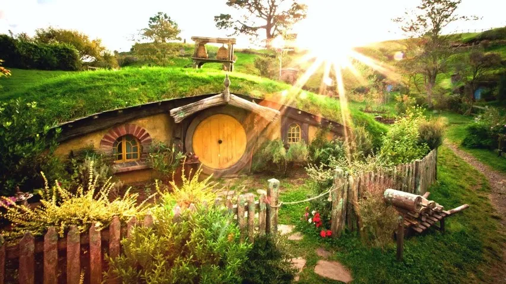
⌂La Comarca
Región apacible del noroeste habitada por los Hobbits, famosa por sus colinas verdes y tranquilos agujeros-hobbit.
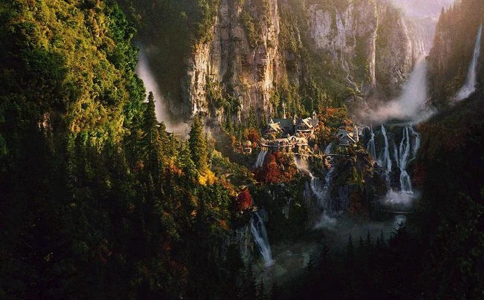
⌂Rivendel
Refugio elfo gobernado por Elrond, conocido como la Última Casa Acogedora al este del mar.
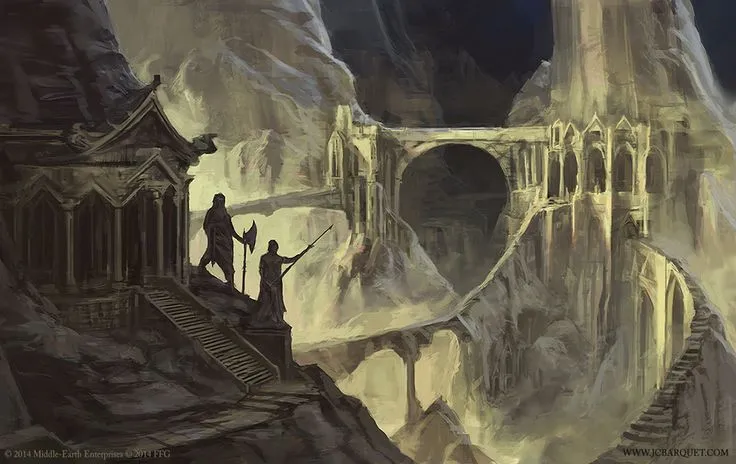
⌂Moria
Ancestral y vasto reino subterráneo de los Enanos bajo las Montañas Nubladas, atestado de sombras tras su caída.
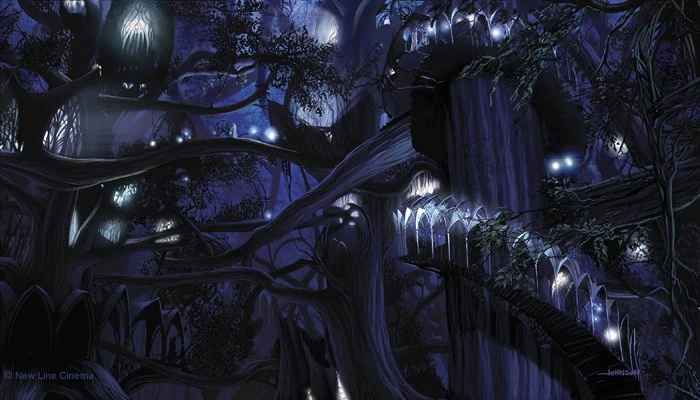
⌂Lothlórien
Bosque dorado y reino elfo protegido por la magia de Galadriel y el poder de uno de los Tres Anillos.
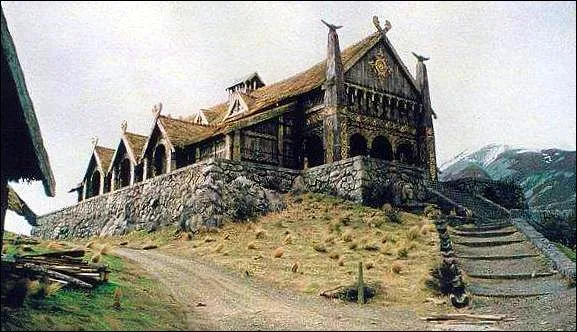
⌂Rohan
Extensa región de llanuras y pastizales, hogar de los Rohirrim, los maestros de los caballos de la Tierra Media.
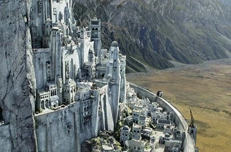
⌂Gondor
El mayor reino de los Hombres en el sur, baluarte defensivo con su emblemática capital Minas Tirith.
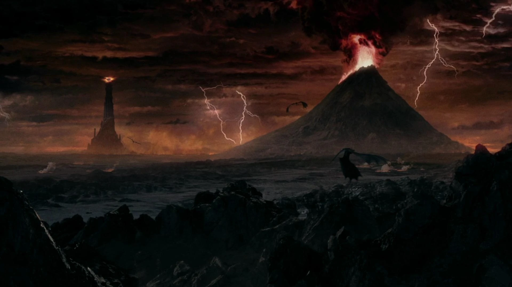
⌂Mordor
Tierra volcánica y desolada rodeada de montañas, fortaleza del Señor Oscuro Sauron y el Monte del Destino.
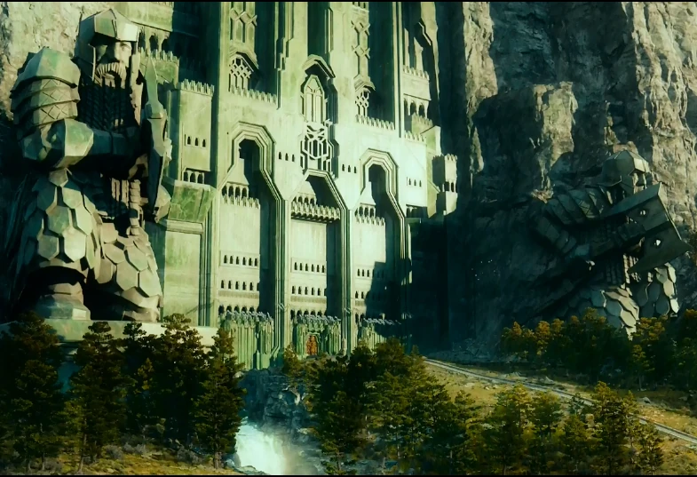
⌂Erebor
La Montaña Solitaria, antiguo reino enano repleto de riquezas legendarias que fue usurpado por el dragón Smaug.
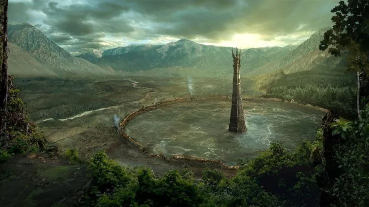
⌂Isengard
Fortaleza circular que alberga la imponente torre de Orthanc, bastión estratégico del mago Saruman.
Razas
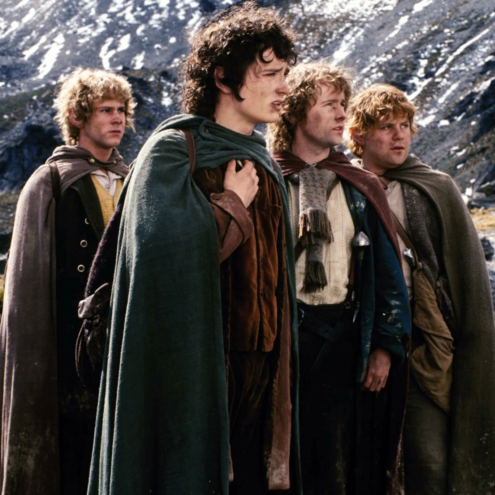
⚜Hobbits
Seres pacíficos de pequeña estatura, pies velludos y un gran amor por la buena comida y la tierra.
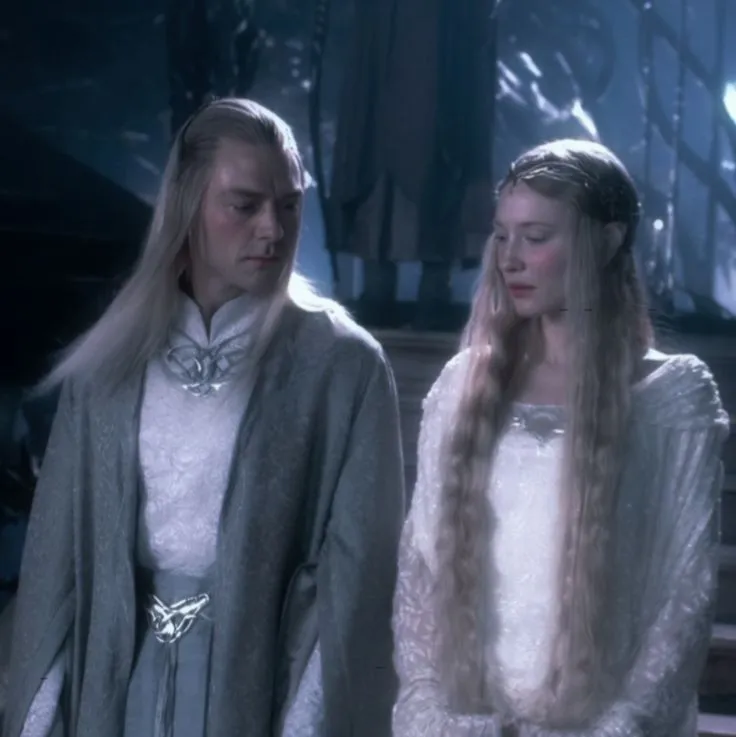
⚜Elfos
Seres inmortales, sabios y vinculados a la naturaleza, pioneros en el arte, la magia y el combate.
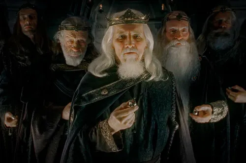
⚜Hombres
Mórtales de gran ambición y coraje, destinados a heredar el dominio de la Tierra Media.
 ⚜
⚜
Enanos
Raza tenaz y fuerte, creada por Aulë, experta en la minería, la forja y la artesanía en piedra.
 ⚜
⚜
Orcos
Criaturas corrompidas y brutales que sirven como fuerza principal de los ejércitos de la oscuridad.
 ⚜
⚜
Uruk-hai
Raza mejorada de orcos creados por Saruman, más grandes, resistentes y capaces de marchar a la luz del sol.
Reinos
Gondor
Reino del sur fundado por los supervivientes de Númenor, gobernado históricamente por sus Senescales.
Rohan
Reino feudal aliado de Gondor, caracterizado por sus fortalezas como el Abismo de Helm y Edoras.
Erebor
El Reino Bajo la Montaña, bastión de la Casa de Durin que restauró la prosperidad en el norte.
Objetos y artefactos
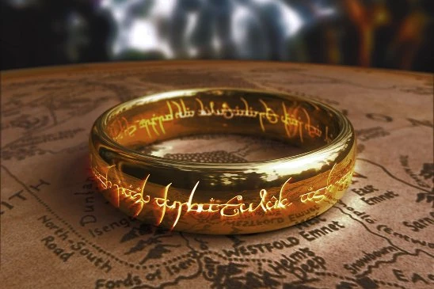
◇El Anillo Único
Forjado por Sauron en el Monte del Destino para gobernar a todos los demás Anillos de Poder.
 ◇
◇
Sting (Dardo)
Daga elfica legendaria hallada por Bilbo que brilla con luz azul cuando hay orcos cerca.
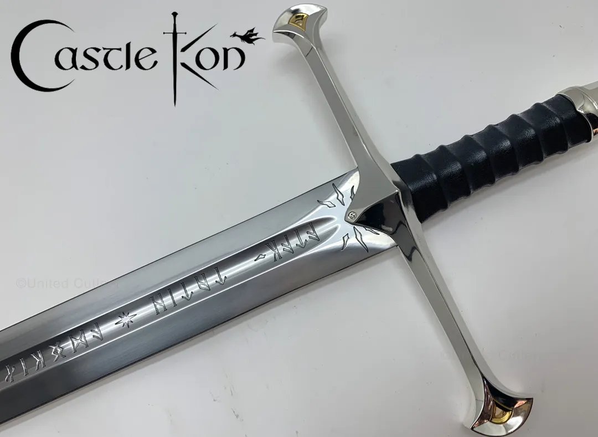
◇Andúril
La Llama del Oeste, forjada a partir de los fragmentos de Narsil para el heredero de Isildur, Aragorn.
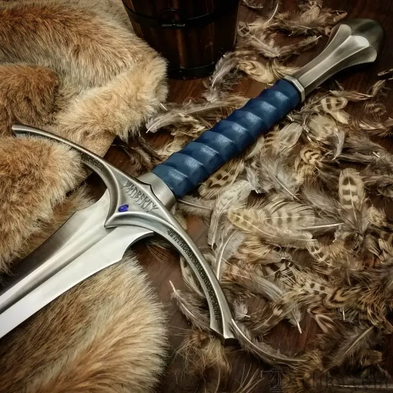
◇Glamdring
La espada del Rey Turgon de Gondolin, blandida posteriormente por Gandalf el Gris.
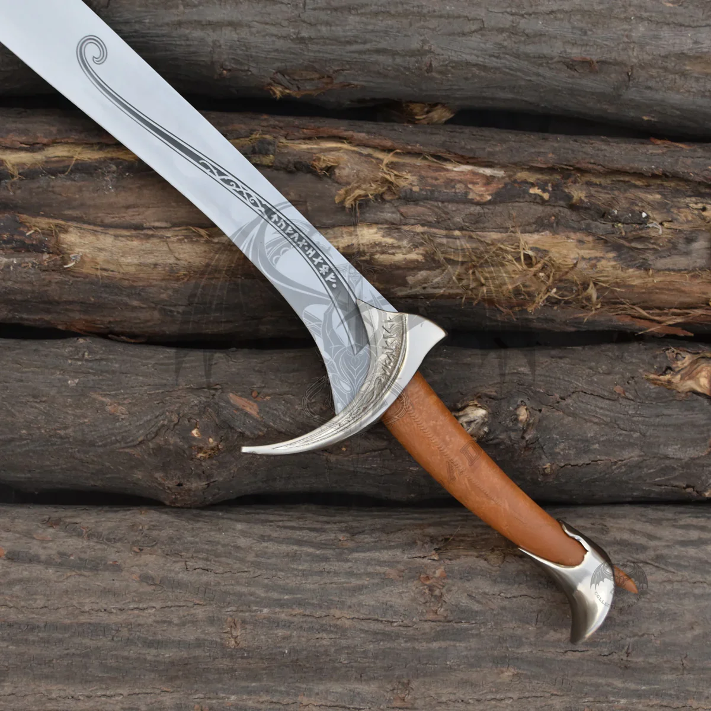
◇Orcrist
Conocida como la 'Mata-orcos', célebre espada elfica empuñada por Thorin Escudo de Roble.
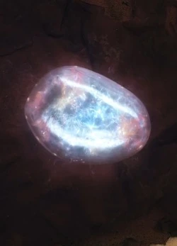
◇Arkenstone
La Piedra del Arca, una joya brillante descubierta en el corazón de Erebor y símbolo del linaje real enano.
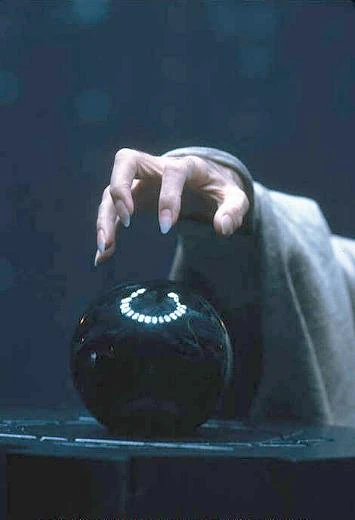
◇Palantíri
Piedras esféricas videntes de Númenor que permiten la comunicación y la visión a grandes distancias.
Cronología
El Hobbit
Aventura de Bilbo y recuperación de Erebor.
60 años después
Bilbo entrega el Anillo a Frodo.
La Comunidad del Anillo
Comienza la misión de destruir el Anillo.
Las Dos Torres
La guerra se extiende por la Tierra Media.
El Retorno del Rey
La misión llega a su desenlace.